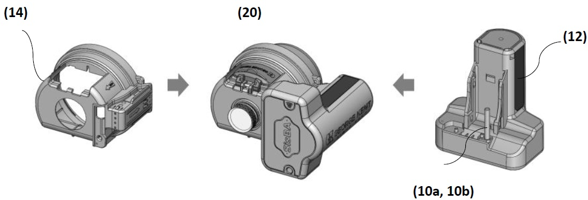

This page highlights intellectual property contributions related to smart metering and utility technologies.

Official grant certificate issued by the Intellectual Property Corporation of Malaysia (MyIPO) for Patent Number MY-211193-A.

Mechanical assembly configuration from official Malaysian Patent filing MY-211193-A, illustrating modular shroud design (14), electronic communication module (12), and integrated meter assembly interfaces (20).
Patent Number: MY-211193-A
Named Inventor: WONG YEW HON (Legal name of Vincent Wong)
This patent introduces foundational structural and functional innovations in smart utility architectures. Beyond optimizing physical enclosure security and modular communication module integration, the design delivers advanced frameworks for ultra-low power sensing architectures and precise, bi-directional flow measurement capabilities.